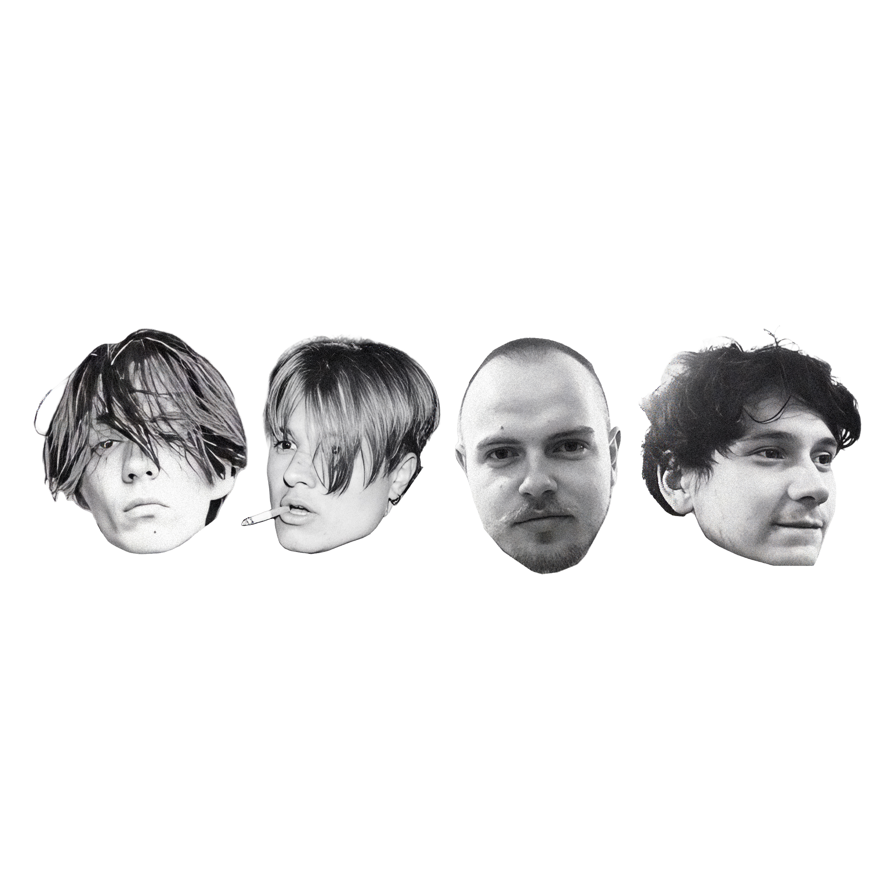
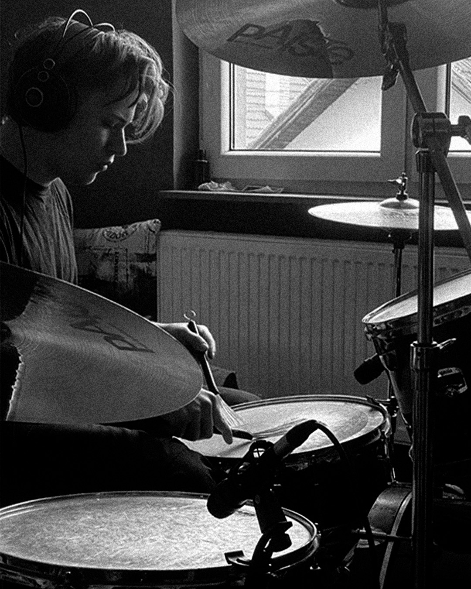

A conversation about beginnings, creative process, and the evolution of the band.
Hello Midheaven, how are you? I am excited to be talking with such a fantastic band from over in Slovakia. It is amazing how music can bring us together.
Let’s start off by travelling back in time. What are some of your earliest musical memories and what was it that first pushed you towards pursuing this passion of yours?
Jakub Hudaček: Well, I remember one time I was in a car during a two-hour drive. I found this “new” artist, Peep, and I had his song White Wine featuring Lil Tracy on repeat for the whole two hours. I don’t know—there was just something about his voice that was so unique, and it kind of clicked for me to start listening to music more seriously. Before that, I was mainly listening to music just for fun and didn’t look into it that much. After I found out about Peep, I realized that things can sound good and be unique in their own way. From there, I started messing around with my guitar, coming up with melodies and stuff. That was probably what did it for me.
Matej Harhovský: My first musical inspirations came from bands like Nirvana, Foo Fighters, and Metallica—their raw energy and powerful rhythms really shaped how I connected with music early on. Before I even had a real drum kit, I made my own at home—just pots, buckets, and armchairs set up around the couch. I used it like a full kit and taught myself to keep time by playing along to my favorite songs. That’s how I developed my sense of rhythm and groove. That whole self-taught start pretty much laid the foundation for how I play today—more instinctive and dynamic.
Julián Jurčík: For me, music has always been much more than just sound—it’s a way of expressing myself. I’ve been playing bass guitar since early childhood, which helped me develop a strong sense of groove, rhythm, and overall musical foundation. I’ve also performed gospel music in church, and that’s where I really discovered the emotional and unifying power that music can have.
And now, let’s take a leap forward to the present day and a brilliant project of yours. The beginnings of Midheaven must have been an exciting, invigorating time. How did it all come to be? How did you first meet the other members and what was the initial spark that brought you together on this creative, musical level?
Jakub Hudaček: Well, actually, I love the way that all the stories about us coming together are pretty interesting and fun. For example, Matej didn’t quite like me in middle school for a certain reason—which, in the end, we were writing and playing songs about. There’s actually a pretty crazy picture from when we were about 9 or 10 during our Communion, where Matej is standing behind me and I’m in front of him. It’s just the two of us in the picture, even though we hadn’t talked for years after that, and then randomly found the picture 10 years later.
So yeah, Matej didn’t like me at first, but when we went to London on a school trip, we kind of clicked while talking about the idea of forming a band—even though I was only just starting to play guitar and Matej didn’t even have drums for another three years.
On the other hand, our newest member, Rado (Radgii), was actually the first “member,” because we formed a “band” called Dark Ideas. It was basically me recording homemade tapes of my guitar compositions, while Radgii was making beats. The story behind how we met is one of my favorites. I was in 8th grade and Radgii was in 9th, and we were at this after-school activity called Lego Robots. Radgii had his classmates there, but I was mostly alone building my own robot on the other side of the classroom. At one point, Radgii quoted this dumb Slovak meme from like 20 years ago: “Daj si banán a šicko v porádku” (Eat a banana and everything will be alright). We just looked at each other and started laughing at that one line and from then we just kinda became best friends for years to come.
Radgii was actually the reason I got myself a guitar. He bought an acoustic guitar for about 20 euros in a wholesale shop, and that did it for me. I basically said to myself, “Well, might as well learn guitar too.”
Julian probably has the weirdest story. During a confirmation in church in 2019, we played in a Christian musical. I played Agent 001, Matej played an old man, and honestly I don’t remember what Julian played. Anyway, during that time we were talking about making a band and figuring out who could play bass. Somehow, out of nowhere, we knew that Julian played bass. We said, just for fun, that Julian would be our bassist—even though we didn’t really know each other at all. He texted us at the end of last year (2025), saying he liked our sound and was wondering if we were looking for a bassist. And yeah, we were—so now he’s part of the band.
You are fresh from the release of an acoustic live album, Live at the Radio Rapes. This is a superb introduction to the band. I am curious though, what do you aim to bring to the stage as an artist, during a non-acoustic performance? What can a fan expect from their very first Midheaven live experience?
Julián Jurčík: We want to bring more energy, atmosphere, and emotion to a live concert. We want the live experience to be powerful and immersive, but still honest and personal. A fan seeing us for the first time can expect dynamism, intensity, and an emotional connection.
Jakub Hudaček: Well, for me it’s the energy that I think the audience can look forward to. Radio was fun and all, but it was just too intimate. I, for example, love the way some acoustic tracks are played distorted or louder in a live performance, and that’s what we’re aiming for. And with having the full lineup finally, I can imagine us having the time of our lives and passing that energy on to the audience.
You have also recently released an impeccable album, entitled Not That Far Away. This is an unstoppable snapshot of the band. Let’s delve deeper into its making. What are your memories from writing, recording and releasing it, and how would you say you grew and evolved as artists throughout this process?
Julián Jurčík: Writing and releasing Not That Far Away was a big step for us. It captures the time we were in as a band. During the process, we gained a better understanding of our sound and more confidence in what we wanted to say with our music. It was a shift both personally and creatively.
Jakub Hudaček: Well, writing and composing was pretty fun. I was in Austria at the time, working in a hotel where I made the whole thing. I was basically writing songs that matched how I was feeling, mostly because I was running out of songs that reflected that time in my life. It all just kind of came and bloomed from that.
Producing, on the other hand, took much longer than I originally thought. For example, Stairs You Have to Climb had about 150 different mix versions before I even figured out what automation in Logic Pro meant. I was really trying to perfect every single detail. In total, there were probably around 200 versions before it was finalized.
Recording drums was just really fun—from buying the microphones, to figuring out how everything works, and then learning how to mix it. For example, while recording drums for Clean, Matej recorded about 14 takes, and we couldn’t understand why they were off tempo. On the 15th take, I realized I needed to shift the audio slightly because of latency. So we probably spent an hour and a half deleting perfectly good drum takes. That drum track is probably my favorite one on the album.
Releasing the album was kind of a strange moment. I remember when it came out at midnight, I played it from start to finish at full volume. It felt interesting hearing something I made in a hotel room when I was feeling a bit lonely, and knowing we were able to put it out into the world.
The best part is knowing that people around the world are hearing it. One of my favorite moments is seeing someone Shazam our songs—we had people in France, South Africa, Russia, the United States, the UK, Ireland, and more. It’s interesting not knowing where our music is playing—it could be in a coffee shop, a pub, or from someone on a train who forgot to plug in their headphones. It just feels nice.
Matej Harhovský: The best thing I remember is a cold beer after hours of recording. This album opened up new possibilities for us in the music industry. We were able to better understand how our instruments and technology work. During its creation, we also decided to start our own label (Stredneba Records), where we came up with new ideas on how to grow overall.

Recording sessions during “Not That Far Away”
I am definitely drawn in by your dynamic songwriting and songcraft. How do you approach this part of your creative process? Is it collaborative or more individual? Are you drawn to specific themes or topics? Perhaps coming from more of a personal, observational, or even fictional perspective or point of view?
Julián Jurčík: A song often starts with a feeling, a mood, or a simple idea. Sometimes it's created individually and then finished together as a band. We're drawn to personal and emotional themes, but also to observations of life around us—memories, relationships, changes, and everyday moments.
Jakub Hudaček: I personally write mostly from my own perspective and talk about things I need to say out loud. It’s harder for me to write fictional stories. The only fictional track is Candlelight from Not That Far Away, and even that still has some of us in it. I’d say it’s collaborative—in the sense that while writing, I’m surrounded by great musicians who can create their parts and also help others develop theirs.
I would like to get more specific with this now and focus on two recent favourites, ‘Stairs You Have to Climb’ and ‘Clean’. For each, what is the story behind the song, and can you remember the moment it came to be? Did anything in particular inspire them and what do they mean to you as the writer and performer of each?
Julián Jurčík: “Stairs You Have to Climb” is about struggle, growth, and moving forward even when it’s hard. “Clean” is more reflective—about letting go, cleansing, and finding clarity. Both come from a sincere place and are open to interpretation.
Jakub Hudaček: It’s interesting that you chose those two because they’re complete opposites. When I was making Stairs You Have to Climb, I wanted to write a love song—not a cliché one, but something more hopeful. Even though it came out a bit sad, it’s still hopeful and it achieved what I wanted. Actually during recording, there was a moment when Matej hit the snare at what seemed like a random time, and I thought he was off tempo. But when we played it together, it made perfect sense. That really made me realize how interesting is that that he is able to come up with drumbeats that I couldn’t even imagine.
Clean, on the other hand, is probably the messiest track. It’s basically me saying some harsh things because I was annoyed and angry. It’s quite argumentative—if said out loud, it could have caused a fight. But the good thing is I needed to get it out, and afterward I realized how stupid it all sounded.
As you well know by now, I love that Midheaven sound and your approach to making and creating music. Those ambient and atmospheric alternative rock soundscapes. How would you say this style of yours came about, what goes into it for you, and who are some of your biggest influences and inspirations as an artist currently?
Matej Harhovský: I think everyone contributed to the project, whether through production or performance. We all have our own lives, problems, and experiences, and certain things connect us. That’s how ideas, lyrics, and melodies come together. In our band, everyone has creative freedom.
We all have different tastes in music. We try to bring back elements of the past while also creating something new. Our inspirations change constantly, depending on what’s happening around us and in our minds. We experiment with different instruments and spaces to achieve the right sound.
Julián Jurčík: Our sound emerged naturally from the music we love and the emotions we want to express. We focus on atmosphere, space, melody, and dynamics. We’re influenced by alternative rock, ambient music, and artists who embrace emotion and cinematic elements. The goal is always to create something that feels real.
A broad question to finish. The last five to ten years have seen the world undergo so much change, both politically and culturally, with wars becoming increasing commonplace and environmental change. And then there’s the music industry, with streaming and AI. How would you say these years have impacted you, both personally and artistically?
Julián Jurčík: The last few years have definitely affected us. There’s a lot of uncertainty, and that naturally comes through in the music. It has made us more thoughtful. At the same time, we value honesty, connection, and meaningful creation more than ever.
Jakub Hudaček: I like the thing that Spotify is doing. They are giving “verified” badges to human artists so you can tell what’s AI and what isn’t. But overall, using AI for writing or composing music feels a bit odd to me. The art of music is in the time you spend creating melodies, chords, and lyrics. When that’s replaced by a prompt, it loses something. Music is about feeling—happiness, sadness, anger—and AI can’t truly feel those feelings.
Matej Harhovský: We all have different tastes in music. We try to bring back elements of the past while also creating something new. Our inspirations change constantly, depending on what’s happening around us and in our minds. We experiment with different instruments and spaces to achieve the right sound.